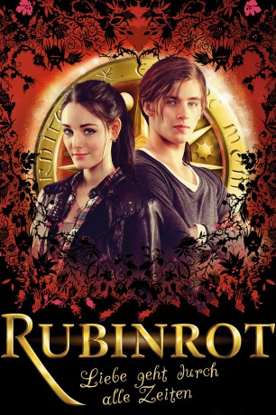

#4982 Rubinrot
 
 IMDB-Wertung: 6.1 / 10
IMDB-Wertung: 6.1 / 10  Metascore: 0
Metascore: 0 
Gwendolyn Shepherd ist ein ganz normaler sechzehnjähriger Teenager, doch ihre Familie birgt seit Generationen ein Geheimnis: Ein Zeitreise-Gen wird in der Sippe weitervererbt, wobei nicht jedes Familienmitglied damit gesegnet ist. Da die Angehörigen annehmen, dass Gwens Cousine Charlotte das Gen in sich trägt, dreht sich innerhalb der Familie alles nur um sie. Eines Tages findet sich jedoch Gwendolyn urplötzlich im London der letzten Jahrhundertwende wieder und ihr wird klar, dass sie es ist, der das Gen weitervererbt wurde und sie nun durch die Zeit reisen kann, nicht Charlotte. Auch wenn Gwendolyn davon nicht begeistert ist, macht sie sich mit Charlottes arroganten Freund Gideon de Villiers auf, das Geheimnis ihrer Familiengeschichte und die Mysterien um den sagenumwobenen roten Rubin zu lüften.
Jahr: 2013
Dauer: 121 Minuten
FSK: 12
Land: Deutschland Studio: Concorde FilmverleihTonspuren: DTS-HD - ,
Untertitel:
Auflösung: 1080p (1920x800) Größe: 7557 MB
Genre: Drama, Sci-Fi, Fantasy, Liebe, Mystery
Regisseur: Felix Fuchssteiner
Drehbuch: Maria Schrader
Soundtrack:
Darsteller:
- Florian Bartholom��i als Paul de Villiers
 Johannes Silberschneider als Mr. Bernhard
Johannes Silberschneider als Mr. Bernhard Sibylle Canonica als Glenda Montrose
Sibylle Canonica als Glenda Montrose Katharina Thalbach als Tante Maddy
Katharina Thalbach als Tante Maddy Veronica Ferres als Grace Sheperd
Veronica Ferres als Grace Sheperd Gottfried John als Dr. White
Gottfried John als Dr. White- Oxana Salzmann als Cynthia Dale
 Kostja Ullmann als James A. P. Pimplebottom
Kostja Ullmann als James A. P. Pimplebottom- Chiara Schoras als Margret Tilney
- Philip Wiegratz als Gordon Geldermann
 Peter Simonischek als Graf von St. Germain
Peter Simonischek als Graf von St. Germain Josefine Preuß als Lucy Montrose
Josefine Preuß als Lucy Montrose- Uwe Kockisch als Falk de Villiers
- Gerlinde Locker als Lady Arista
 Laura Berlin als Charlotte Montrose
Laura Berlin als Charlotte Montrose- Levin Henning als Nick Shepherd
- Maria Ehrich als Gwendolyn Shepherd
 Jannis Niewöhner als Gideon de Villiers
Jannis Niewöhner als Gideon de Villiers- Jennifer Lotsi als Leslie
 Rüdiger Vogler als Thomas George
Rüdiger Vogler als Thomas George- Friederike Rhein als Sarah Bloomberg
- Anna Böttcher als Miss O'Donnell 1912
- Thomas Limpinsel als Mr. Southfolk 1912
 Axel Milberg als Lucas Montrose
Axel Milberg als Lucas Montrose- Johannes von Matuschka als Mr. Whitman
- Christine Rollar als Mrs. Jenkins
- Maurizio Magno als Der kleine Robert
- Justine del Corte als Madame Rossini
- Elke Borkenstein als Blumenmädchen 1912
- Menyhért René Balog-Dutombé als Butler 1912
- Karin Graf als Frau in Kirche
- Reiner Neffgen als Bettler 1783
- Martin Östreicher als Lord Brompton
 Butz Ulrich Buse als Miro Rakoczy
Butz Ulrich Buse als Miro Rakoczy- Ferenc Hock als Kutscher
- Ádám Madaras als Angreifer Hyde Park
- Levente Tamási als Angreifer Hyde Park
- Markus Daffinger als Wächter 1942
- István Kiss als Wächter 1942
- Frederic Welter als Mr. Marley
- Holger Kriechel als Wächter
- Sofi de la Torre als Sängerin Kirschblütenball
- Daniel-Emanuel Uhde als Band Kirschblütenball
- Benedikt Weißkopf als Band Kirschblütenball
- Christopher Scherf als Band Kirschblütenball
- Sharan Hunjan als Train Commuter , uncredited
- Markus Frank Juri Popp als English gentleman , uncredited
Datei: X:\3-Trilogie(A-F)\Edelstein-Trilogie\Rubinrot (2013, FSK12, 1920x800).mkv seit 07.12.2016
Festplatte: HD Collection-2(A-Z)-3(A-M)
 Alle Filme aus Gruppe '3-Trilogie(A-F)\Edelstein-Trilogie'
Alle Filme aus Gruppe '3-Trilogie(A-F)\Edelstein-Trilogie'